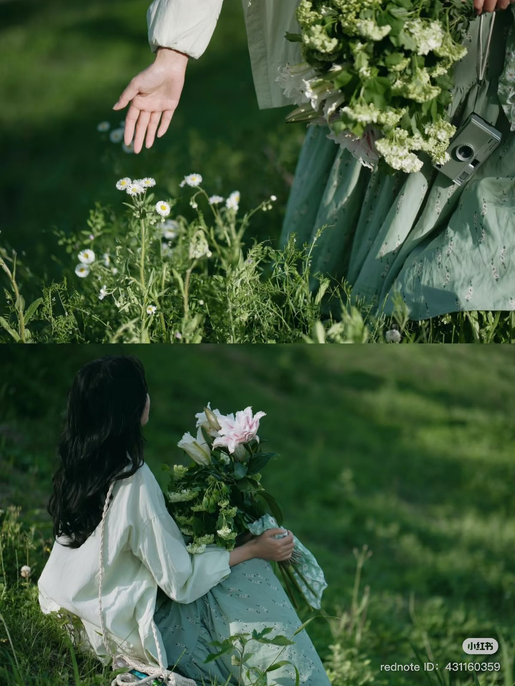

Sentir

No 03
P-01
Senti carries more than scent sentiment.
The quiet emotions that stay with us,
returning softly through familiar air.
Not seen, but deeply felt.
P-02
01 - Feeling
02 - Experience
03 - Presence
Scent begins as sensation.
A fleeting moment on skin,
becoming something
quietly unforgettable.
To feel is to remember.
A fragrance settles softly,
turning moments into something
deeply personal.
Fragrance is not only smelled.
It is lived, carried,
and quietly woven
into everyday moments.
A scent
Is complete
Only
When
It is felt.